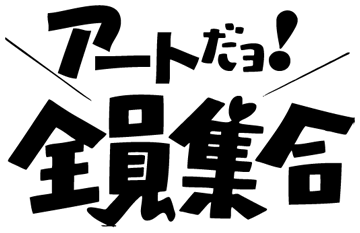

|
※既に終了しています。
|
キーワードは「教育」
日本の美術教育に対する疑問から本作を発起した。
日本の美術教科書は世界一薄いと言われている。
15歳〜18歳という、人間の成長における最も多感な時期に一冊が5mm程度の教科書しか配布されず、それが三年間で三冊。
これが日本というG8にも入る一流先進国が国民に課す美術教育の現状である。
さて、その中身だが、例えば高校一年生用の教科書P22に“わたしの顔・あなたの顔”というトピックが設けられている。その中身はこうである。
以下抜粋
「親しい人々をモデルに頼んで、その人から受けた感じを出すために、立体感や質感、色彩などをしっかり観察して、最もよいと思われる表現を工夫して描いてみよう。描き上がったらモデルになってもらった人や友だちから率直な感想を聞いてみよう。そこからさらに人間同士の交流の輪を広げ、理解を深めていこう。」 高校美術1(日本文教出版株式会社/平成8年発行)
また、そこから10年ほど後、平成17年発行の高校二年生用の教科書P24でも“共同でつくる”という同様のトピックが掲載されている。
以下抜粋
「共同制作には、文化祭の展示のように、一人ではできない大がかりな作品をつくり出せるという魅力がある。そして、一人でつくるときには味わえない充実感を得ることもできるだろう。全員の思いが一つになったとき、それまでの苦労が喜びにかわる。」 美術Ⅱฺ(光村図書出版株式会社/平成17年発行)
これは美術という器に入れられた道徳の教科書に過ぎない。
つまり日本の美術教育の要とは道徳であり、その道徳の教える事とは、美術史の変遷や芸術家の時代背景や成り立ちよりも「正しく・仲良く・楽しく」を教えることなのである。そのため、一般的な日本人はまともな美術教育を全く受けないまま美術の義務教育を終了することになるのである。
では、その美術教育とは正しいのか？ 否か？
この問いへの単純思考のアンサーを今回の「アートだョ!全員集合」で表現した。
「アートだョ!全員集合」とは、道徳で教える「正しく・仲良く・楽しく」の象徴とも言うべきザ・ドリフターズの「8時だョ!全員集合」を、高校三年間、教科書で道徳の噛ませ犬として登場した歴史に名だたる世界的芸術家たちの作風で描くことで、芸術家へのオマージュと日本美術教育へのディスリスペクトを込めた作品なのである。
| 「アートだョ!全員集合」 | |||
| ≫1.概要 | ≫2.図解 | ≫3.展示風景 | |